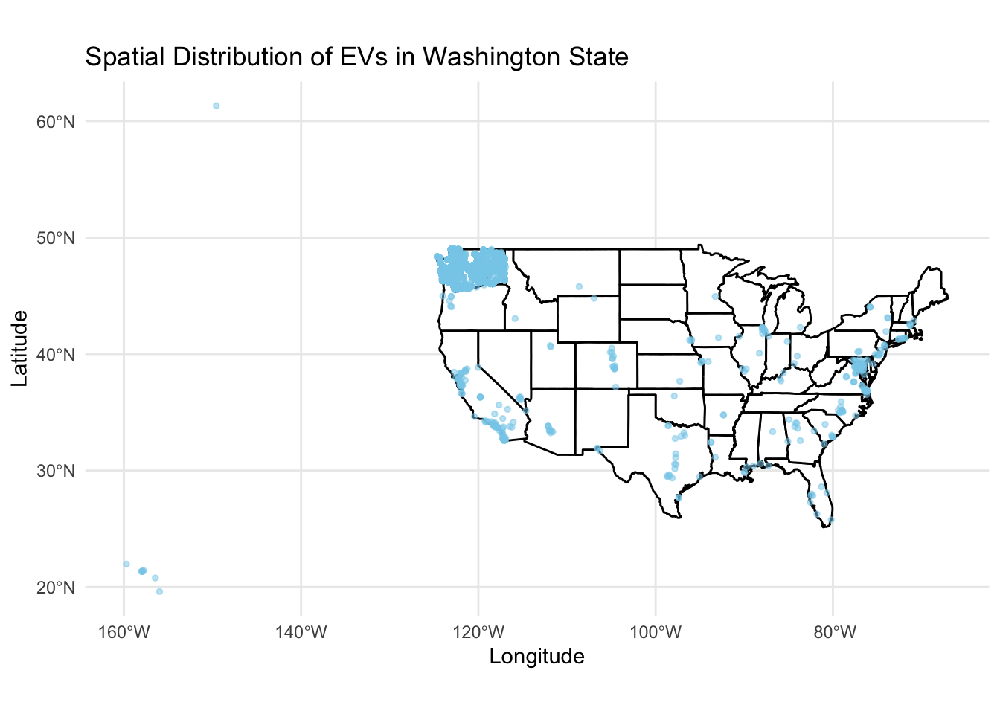
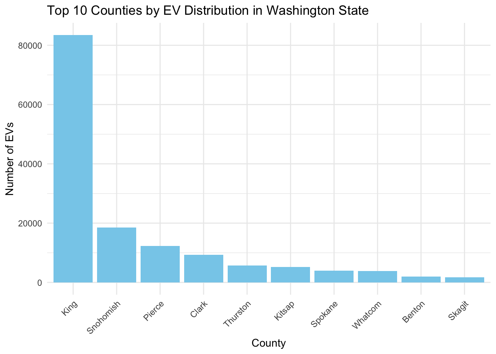

3.1 Number of EVs Registered Each Year (Up to 2023)
Code
suppressPackageStartupMessages(library(dplyr))library(ggplot2)ev_data <-read.csv('/Users/hujiasheng/Electric_Vehicle_Population_Data.csv')ev_count_by_year <- ev_data %>%group_by(Model.Year) %>%summarise(Count =n(), .groups='drop')ggplot(ev_count_by_year, aes(x = Model.Year, y = Count)) +geom_line(na.rm =TRUE) +geom_point(na.rm =TRUE) +scale_x_continuous(limits =c(NA, 2023)) +theme_minimal() +ggtitle("Number of EVs Registered Each Year") +xlab("Year") +ylab("Number of EV Registrations")
This graph illustrates the annual registration count of electric vehicles (EVs) up to 2023, showcasing a clear upward trajectory in EV adoption. The increasing trend highlights the growing consumer shift towards sustainable transportation, likely spurred by technological advancements, environmental awareness, and policy incentives. Notable surges in certain years may correspond to key market or policy developments. This visualization serves as an indicator of the EV market’s expanding footprint, reflecting the evolving landscape of automotive preferences and environmental considerations.
3.2 Year-over-Year Growth Rate in EV Registrations (Up to 2023)
The graph depicting the year-over-year growth rate in EV registrations presents a dynamic perspective of the market’s momentum. Fluctuations in growth rate, marked by peaks and troughs, signify periods of rapid expansion or slowdowns in EV adoption. These variations are indicative of market responses to external stimuli such as new model launches, changes in consumer preferences, or policy shifts. The graph offers insights into the market’s responsiveness and periods of heightened interest in EVs, providing a nuanced understanding of the factors driving the EV market’s evolution.
3.3 Comparative Analysis of EV Adoption by Type (PHEV vs BEV)
Code
library(ggplot2)library(dplyr)filtered_ev_data <- ev_data %>%filter(Electric.Vehicle.Type %in%c("Plug-in Hybrid Electric Vehicle (PHEV)", "Battery Electric Vehicle (BEV)"))ev_type_by_year <- filtered_ev_data %>%count(Model.Year, Electric.Vehicle.Type) %>%filter(Model.Year >=2005)ggplot(ev_type_by_year, aes(x = Model.Year, y = n, fill = Electric.Vehicle.Type)) +geom_bar(stat ="identity", position ="stack") +scale_x_continuous(limits =c(2005, 2025)) +theme_minimal() +labs(title ="Comparative Analysis of EV Adoption by Type (PHEV vs BEV)",x ="Year",y ="Number of Registrations",fill ="Electric Vehicle Type")
The graph provides a comparative analysis of adoption rates between Plug-in Hybrid Electric Vehicles (PHEVs) and Battery Electric Vehicles (BEVs). It reveals distinct trends in consumer preferences and technological advancements over the years. The stacked bar chart format clearly illustrates the proportionate dominance of each EV type per year, showcasing the shifting market dynamics. Key observations include the fluctuating popularity between PHEVs and BEVs, potentially influenced by evolving technology, policy changes, and market availability. This visualization serves as a valuable tool for understanding the trajectory of electric vehicle adoption, highlighting the nuanced preferences within the EV market.
3.4 Spatial Distribution of EVs in States
Code
library(sf)
Linking to GEOS 3.11.0, GDAL 3.5.3, PROJ 9.1.0; sf_use_s2() is TRUE
Code
library(maps)state_map <-map_data("state")ev_data <- ev_data %>%mutate(Longitude =as.numeric(sub(".*\\(([^ ]+).*", "\\1", `Vehicle.Location`)),Latitude =as.numeric(sub(".* ([^ ]+)\\).*", "\\1", `Vehicle.Location`)) ) %>%filter(!is.na(Longitude) &!is.na(Latitude))coordinates <-st_as_sf(ev_data, coords =c("Longitude", "Latitude"), crs =4326)ggplot() +geom_polygon(data = state_map, aes(x = long, y = lat, group = group), fill ="white", color ="black") +geom_sf(data = coordinates, color ="skyblue", size =1, alpha =0.5) +theme_minimal() +labs(title ="Spatial Distribution of EVs in Washington State",x ="Longitude",y ="Latitude")
The visualization maps the current registration of Battery Electric Vehicles (BEVs) and Plug-in Hybrid Electric Vehicles (PHEVs) in Washington State as recorded by the Department of Licensing (DOL). The higher density of points in the western part of the state likely reflects the greater population and infrastructure in urban areas such as Seattle, indicating a correlation between EV adoption and urbanization. The presence of EVs across more remote regions highlights a statewide commitment to sustainable transportation, despite varying levels of charging infrastructure and urban density. This spread underscores the importance of EVs in Washington’s push for greener mobility solutions.
3.5 Spatial Distribution of EVs in Washington State
Code
washington_map <-map_data("state", region ="washington")ev_data_WA <- ev_data %>%mutate(Longitude =as.numeric(sub(".*\\(([^ ]+).*", "\\1", `Vehicle.Location`)),Latitude =as.numeric(sub(".* ([^ ]+)\\).*", "\\1", `Vehicle.Location`)) ) %>%filter(!is.na(Longitude) &!is.na(Latitude)) %>%filter(between(Longitude, -124.848974, -116.916031) &between(Latitude, 45.543541, 49.002494))coordinates <-st_as_sf(ev_data_WA, coords =c("Longitude", "Latitude"), crs =4326)ggplot() +geom_polygon(data = washington_map, aes(x = long, y = lat, group = group), fill ="white", color ="black") +geom_sf(data = coordinates, color ="skyblue", size =1, alpha =0.5) +theme_minimal() +labs(title ="Spatial Distribution of EVs in Washington State",x ="Longitude",y ="Latitude")

Code
# Calculating the density of points to create a heatmapev_data_WA <- ev_data_WA %>%ggplot(aes(x = Longitude, y = Latitude)) +stat_density2d(aes(fill =after_stat(level)), geom ="polygon", color ="darkblue", alpha =0.3) +scale_fill_gradient(low ="lightblue", high ="darkblue") +geom_polygon(data = washington_map, aes(x = long, y = lat, group = group), fill =NA, color ="black") +coord_fixed(1.3) +labs(title ="Heatmap of EVs in Washington State",x ="Longitude",y ="Latitude") +theme_minimal()print(ev_data_WA)
The map showcases the geographical spread of electric vehicles (EVs) across Washington State, with a notable concentration in the metropolitan area around Puget Sound, including Seattle. This distribution pattern aligns with urban population densities and the availability of EV infrastructure such as charging stations. The scatter of EVs beyond these hubs into more rural areas indicates a broader adoption, possibly encouraged by state policies and incentives. The map highlights key areas for potential infrastructure development and offers a visual representation of EV penetration, which is crucial for planning future expansions of green transportation initiatives in Washington.
3.6 Top 10 Counties by EV Distribution in Washington State
Code
county_distribution <- ev_data %>%count(County, sort =TRUE) %>%top_n(10, n)ggplot(county_distribution, aes(x =reorder(County, -n), y = n)) +geom_bar(stat ="identity", fill ="skyblue") +labs(title ="Top 10 Counties by EV Distribution in Washington State",x ="County",y ="Number of EVs") +theme_minimal() +theme(axis.text.x =element_text(angle =45, hjust =1))
The bar chart illustrates the top 10 counties in Washington State by electric vehicle (EV) distribution. King County leads by a substantial margin, reflecting a higher rate of EV adoption, likely due to urbanization and infrastructure support. Snohomish and Pierce counties follow, indicating significant EV presence. The chart reveals a stark contrast between King County and the others, suggesting a potential focus area for expanding EV infrastructure and incentives. The distribution pattern underscores the correlation between population density, infrastructure, and EV adoption rates across different regions.
3.7 Assosication Bwteen Number of EVs Registered vs Some Socio-economic Factors
Code
suppressPackageStartupMessages(library(tidyverse))pce_data <-read.csv('/Users/hujiasheng/SAPCE3_WA_1997_2022.csv')gdp_data <-read.csv('/Users/hujiasheng/WA_Data_GDP.csv')# Preprocessing for PCE datapce_filtered <- pce_data %>%slice(1:1) %>%select(7:ncol(pce_data)) %>%select(-2)pce_long <- pce_filtered %>%pivot_longer(cols =-Description, names_to ="Year", values_to ="PCE" ) %>%select(-1)pce_long$Year <-as.integer(sub("X", "", pce_long$Year))colnames(ev_count_by_year)[1] ="Year"merged_data_pce <-merge(ev_count_by_year, pce_long, by ="Year")# Preprocessing for GDP datacolnames(gdp_data)[1] ="Year"gdp_data$Washington.Per.Capita.GDP <-gsub("\\$", "", gdp_data$Washington.Per.Capita.GDP)gdp_data$Washington.Per.Capita.GDP <-as.integer(gsub(",", "", gdp_data$Washington.Per.Capita.GDP))gdp_data$Washington.Population <-as.integer(gsub(",", "", gdp_data$Washington.Population))merged_data_gdp <-merge(ev_count_by_year, gdp_data, by ="Year")# Plot 1: Number of EVs Registered vs Personal Consumption Expendituresggplot(merged_data_pce, aes(x =log(PCE), y =log(Count))) +geom_point() +theme_minimal() +labs(title ="Number of EVs Registered vs Personal Consumption Expenditures",x ="Log of Personal Consumption Expenditures in Washington State",y ="Log of Number of EVs Registered")

Code
# Plot 2: Number of EVs Registered vs Washington Populationggplot(merged_data_gdp, aes(x =log(Washington.Population), y =log(Count))) +geom_point() +theme_minimal() +labs(title ="Number of EVs Registered vs Washington Population",x ="Log of Population in Washington State",y ="Log of Number of EVs Registered")
Code
# Plot 3: Number of EVs Registered vs GDP per capitaggplot(merged_data_gdp, aes(x =log(Washington.Per.Capita.GDP), y =log(Count))) +geom_point() +theme_minimal() +labs(title ="Number of EVs Registered vs GDP per capita",x ="Log of GDP per capita in Washington State",y ="Log of Number of EVs Registered")